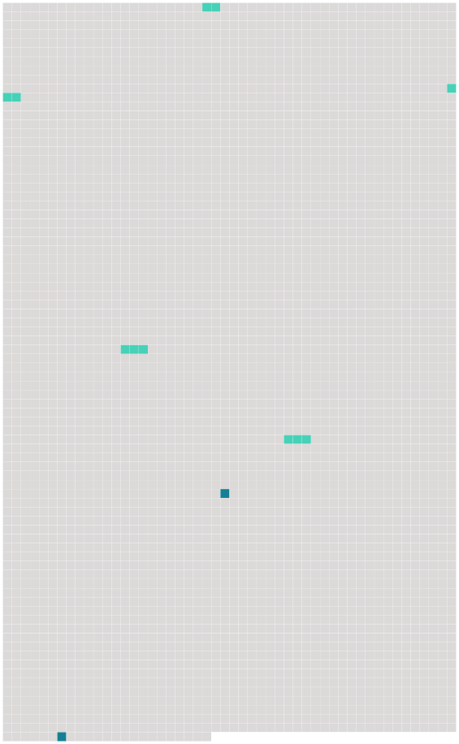

Longueur nb maillons : 6 mentions |
|
Dans la salle ils trouvèrent les trois officiers de moindre grade : un lieutenant, Otto de Grossling ; deux sous-lieutenants, [Fritz Scheunaubourg] et le marquis Wilhem d'Eyrik, un tout petit blondin fier et brutal avec les hommes, dur aux vaincus, et violent comme une arme à feu. [12 phrases]
» [47 phrases] [Le lieutenant Fritz] , enfin, prononça en jetant un rire pâteux : « Ces temoiselles técitément n'auront pas peau temps pour leur bromenate. [15 phrases]
» [9 phrases]
» [47 phrases] Alors [Fritz] et Otto dégainèrent et voulurent massacrer les femmes, qui se traînaient à leurs genoux. |
 |
Il est possible de télécharger la ressource sur la page Ortolang |
Si vous avez des questions ou vous voyez des erreurs, merci d'envoyer un mail à silvia.federzoni89@gmail.com |